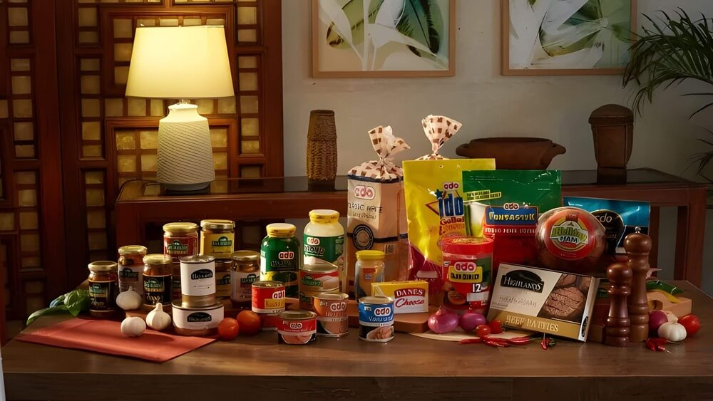

Product Selection Made Easy
When you visit our website, you'll discover full of information about CDO Foodsphere products. We provide a comprehensive catalog that offers a detailed list of products available in Mindanao. Each product comes with a description, pricing, and current availability.
It's our commitment to ensure that your product selection process is effortless, enabling you to make informed choices that cater to your culinary needs. "Staying Informed and Exploring Partnerships" For us, it's not just about offering a product catalog; it's about keeping you informed and empowered. We keep you updated on the latest promotions, product releases, and any news relevant to CDO Foodsphere products.
We believe that staying informed is key to making the most of what CDO Foodsphere has to offer. Moreover, we provide insights into how local businesses and vendors can partner with CDO FoodSphere Distribution. We understand the importance of strong collaborations, and we're here to facilitate those connections. If you're a local food business, a street vendor, or a vendor seeking reliable suppliers, our platform is designed to provide you with the information and guidance you need to explore and establish fruitful partnerships.